A screen-by-screen breakdown of the Noteful iPad note-taking app (free tier), written so you can rebuild it for iPad and improve on it. Screenshots come from the iPad app running on a Mac, so they show the real iPad screens. Captured 27 Oct 2026. All screenshots are in screenshots/ next to this file.
Building it with Claude? Hand Claude the file BUILD-SPEC-for-Claude.md (same folder) plus the screenshots/ folder. It has the iPad-specific details: Apple Pencil handling, touch gestures, layouts, tech stack, data model, build order and a test checklist.
iPad controls: wherever this guide says "click", read "tap". "Right-click" = long-press. Tap a tool once to pick it, tap it again to open its options. Fingers scroll and zoom; the Apple Pencil draws.
1. What the app is
Noteful is a handwriting-first notebook app (like GoodNotes / Notability). The core idea:
Library of notebooks, organised with folders and nested tags (e.g. Sample/Drawing).
Each notebook has an optional cover and a list of pages. Each page has a paper template (blank, ruled, grid, dot, Cornell…) or is a page from an imported PDF.
On a page you draw with pen / highlighter / tape, and place objects: text boxes, shapes, images, stickers, links. Content lives in layers.
Several notebooks can be open at once as tabs.
Study features: tape to hide answers and reveal them, quiz "?" stickers, bookmarks, outlines, audio recording.
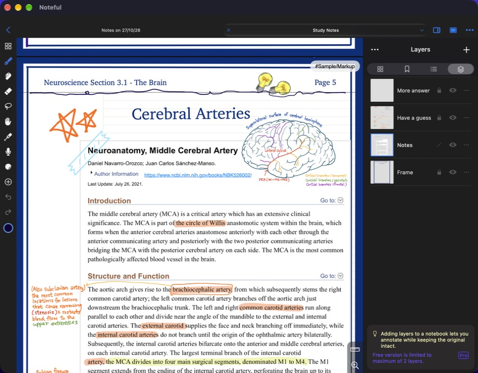
A real annotated PDF: handwriting, highlights, tape, a page tag (#Sample/Markup), two notebooks open as tabs, and the Layers panel.
2. Library (home screen)
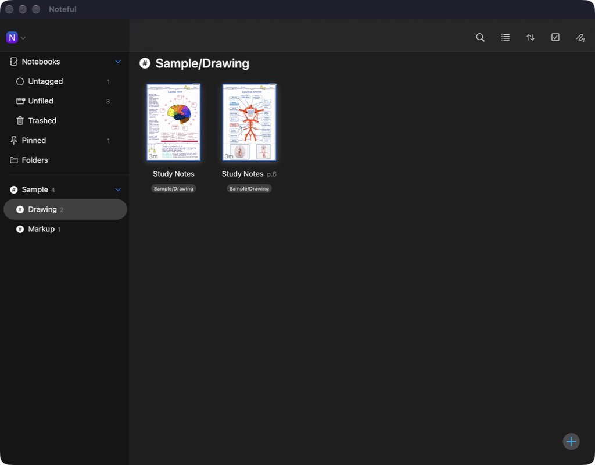
Library in grid view, filtered by the tag Sample/Drawing.
Left sidebar
Item
What it does
N logo ▾
Opens the About / Settings sheet (see App settings).
Notebooks (collapsible)
All notebooks. Children are smart filters:
· Untagged
Notebooks with no tag (with count).
· Unfiled
Notebooks not inside any folder.
· Trashed
Deleted notebooks (soft delete, restorable).
Pinned
Notebooks (or pages) you pinned for quick access.
Folders
Folder tree. Empty state shows an illustration + "No notebooks".
Tags (e.g. # Sample → Drawing, Markup)
Hierarchical tags with counts. Clicking a parent shows everything under it. Tags can be put on notebooks and on individual pages.
Top-right toolbar
Icon
What it does
🔍 Search
"Find in library" field. Results grouped (e.g. Document Names), match highlighted, "1 Match Found".
☰ List / grid
Toggles between thumbnail grid and list (thumbnail, name, tag chips, "13 minutes ago", ••• button).
⇅ Sort
Sort by Name / Date Modified / Date Created, plus Zoom In / Zoom Out (thumbnail size).
☑ Select
Multi-select mode with a bottom action bar: Share, Duplicate, Move, Edit Tags, Delete.
✎ Quick note
Instantly creates a new notebook named "Notes on 27/10/26" (today's date) and opens it.
+ (bottom right)
Menu: Notebook (full create dialog), Quick Create (one tap, with a ⚙ to set defaults), Import File (PDF/images).
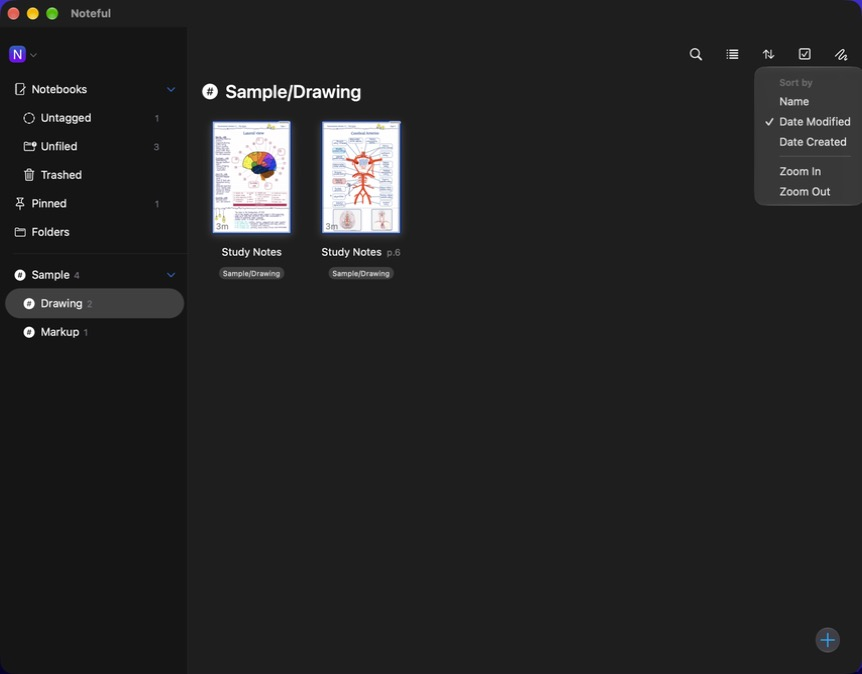
Sort menu
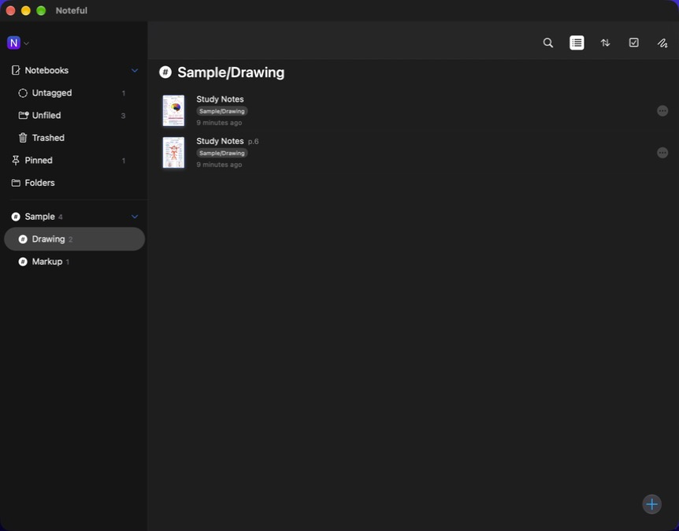
List view
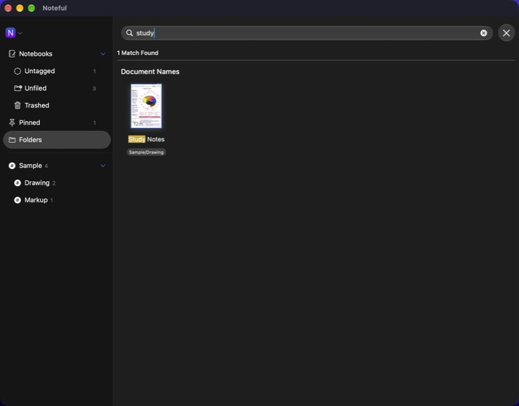
Library search
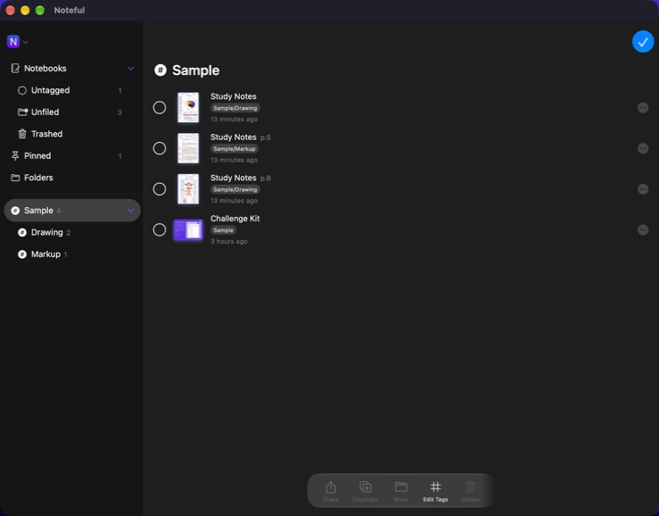
Select mode + bulk action bar
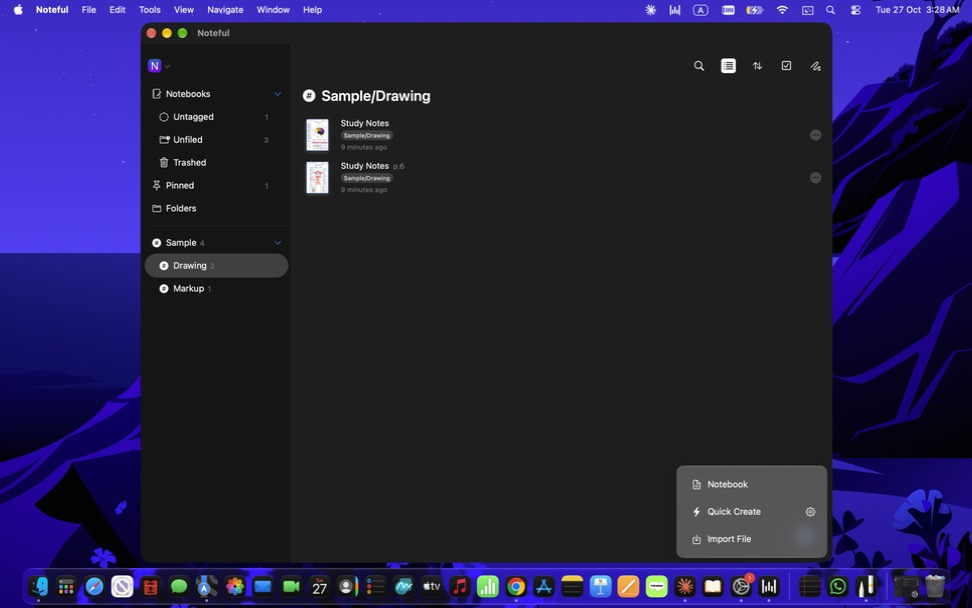
+ menu
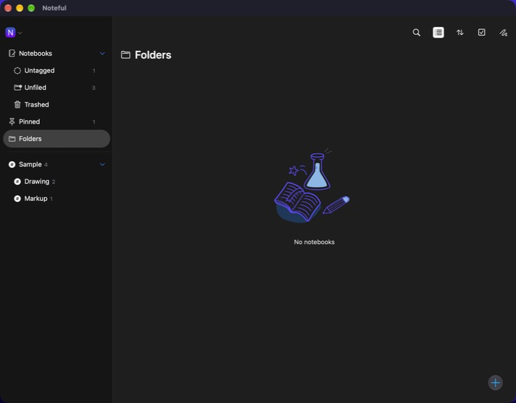
Folders empty state
Notebook ••• menu
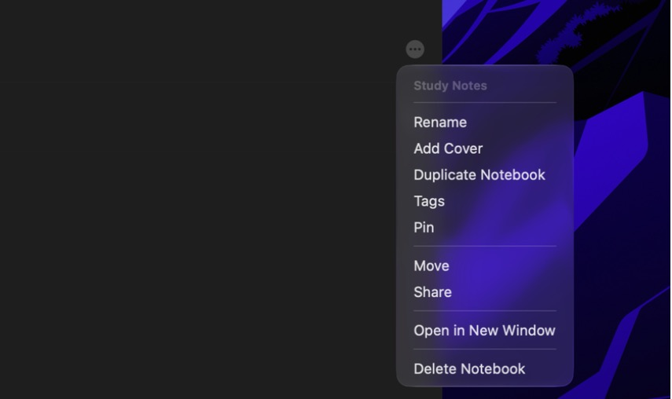
Rename · Add Cover · Duplicate Notebook · Tags · Pin · Move · Share · Open in New Window · Delete Notebook
3. Creating a notebook
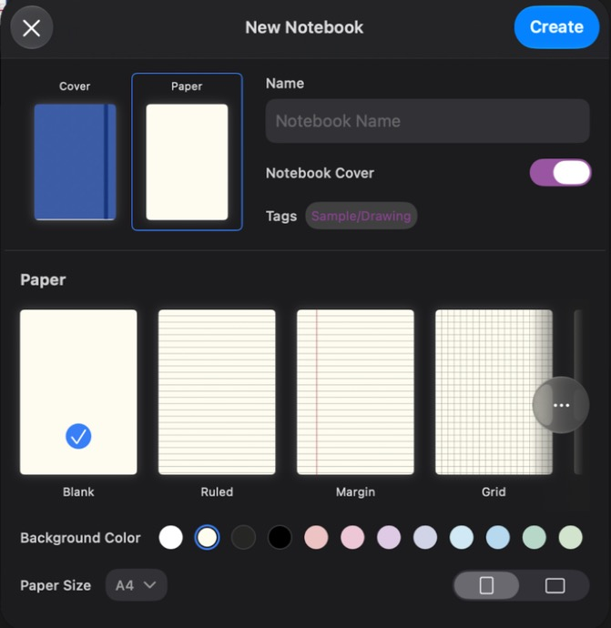
New Notebook dialog
Cover / Paper preview tiles at top — click one to switch which picker is shown below.
Name field, Notebook Cover on/off toggle, Tags (pre-filled with the tag you're currently viewing).
Paper row: Blank, Ruled, Margin, Grid… and a ••• button opening the full template library.
Background colour: ~12 swatches (white, cream, dark grey, black, pastels).
Paper size dropdown (A4, Letter…) and portrait / landscape toggle.
Create button top-right, ✕ to cancel.
Template library ("Choose a Template")
Tabs: Explore (built-in) and Saved (your own). Filters at the top: Colour, Size, Orientation, Line Spacing (e.g. 16 Medium), Line Thickness.
Covers
Classic (17 colours), Simple (7), Botanical (4), Composition (5), Pattern (7+). Most beyond the first few are Pro.
Draw and hold: Auto Shape (hold at end of stroke → becomes a clean line/rectangle/circle), Scribble to Erase (scribble then hold → erases what's under it), hold Delay slider (0.5 s).
Pen pressure: Enhanced Sensitivity, Draw on Hover (strokes drawn even without pen pressure). Apple Pencil hover shows a nib preview on supported iPads.
Colour: favourites in the toolbar; tap the colour dot for a full picker. Shortcut: F; pen favourites 1–9.
6. Highlighter & Tape
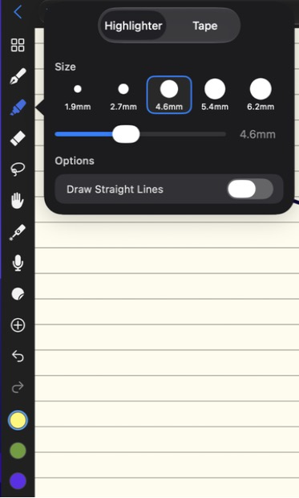
Highlighter
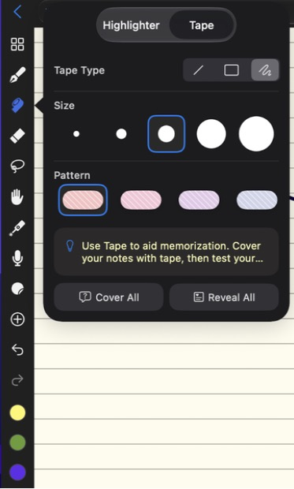
Tape (study tool)
Highlighter: sizes 1.9–6.2 mm + slider, Draw Straight Lines toggle, translucent and drawn under ink. Its own 3 colour favourites (yellow/green/purple). Shortcut G.
Tape (same button, second tab): opaque strips you draw over notes to hide them. Tap a tape to reveal / hide it.
Shortcut E. Scribble-to-erase also works from the pen.
8. Lasso (select)
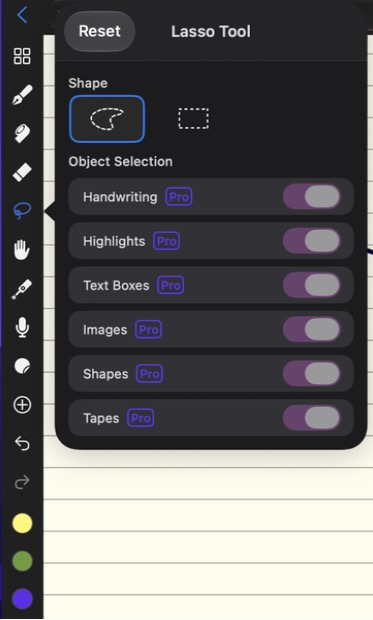
Lasso options
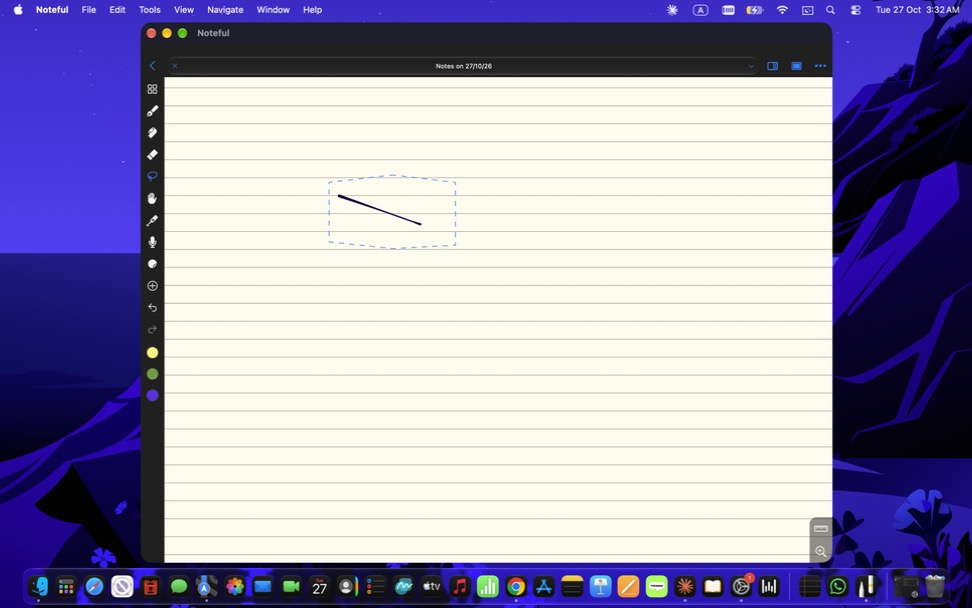
Selection outline
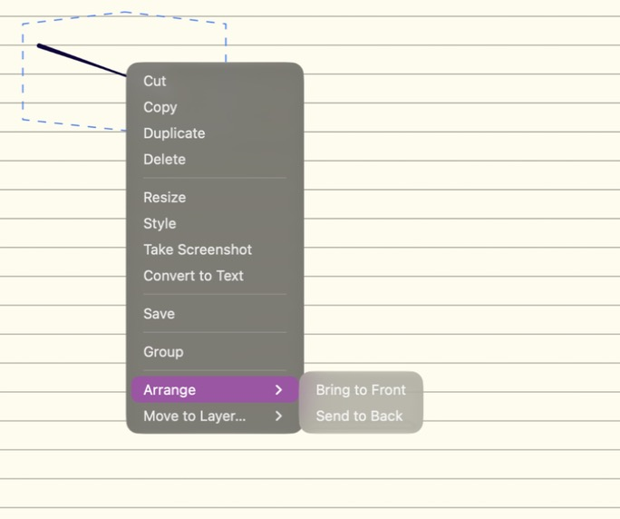
Selection menu (tap or long-press the selection)
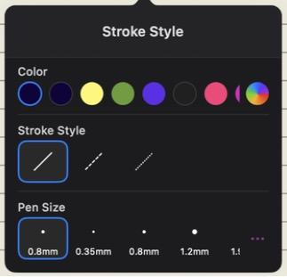
Style: recolour / restyle selected ink
Shape: freeform or rectangle.
Object filters (Pro): choose what the lasso picks up — Handwriting, Highlights, Text Boxes, Images, Shapes, Tapes.
Selection menu: Cut · Copy · Duplicate · Delete · Resize · Style (colour, solid/dashed/dotted, pen size) · Take Screenshot · Convert to Text (handwriting OCR) · Save (save as reusable sticker) · Group · Arrange (Bring to Front / Send to Back) · Move to Layer…
Drag the selection to move it. Shortcut A.
9. Hand, Presentation, Audio, Stickers
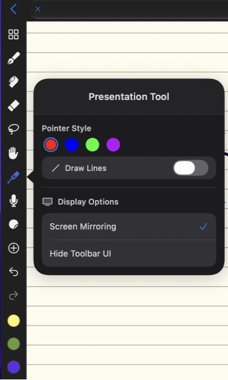
Presentation tool
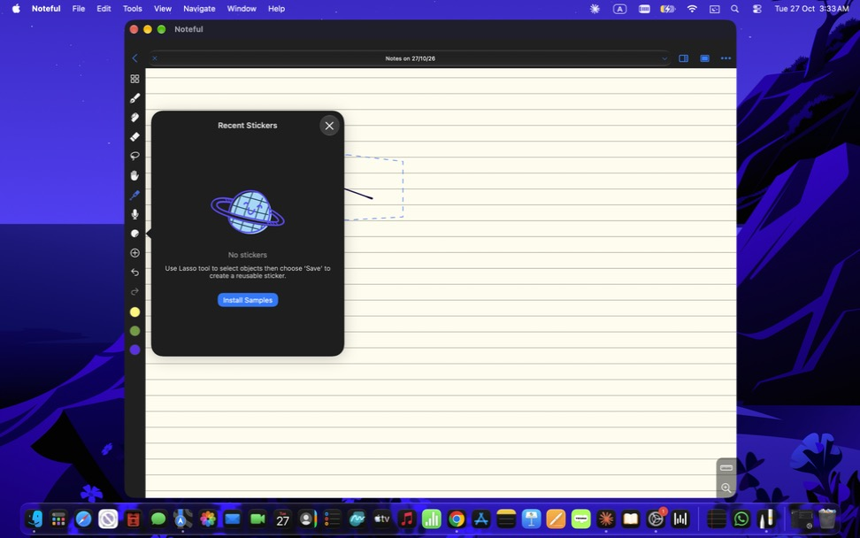
Stickers
Hand (H): pan/scroll without drawing; tap links and tapes.
Presentation / laser pointer: pointer colours (red, blue, green, purple), Draw Lines (fading laser ink), Display options for external screens: Screen Mirroring or Hide Toolbar UI (audience sees only the page).
Audio recordings (mic): record a lecture while writing; recordings attach to the notebook. (Needs microphone permission — didn't open in this session.)
Stickers: "Recent Stickers" panel. Make a sticker by lasso-selecting anything → Save. Install Samples adds a starter pack. The sample notebook uses "?" quiz stickers over diagram labels.
Text tool (T) — click on the page to place a box; a formatting bar appears at the bottom.
Formatting bar: font (Helvetica) · size (16) · BIUS · Aa (text styles) · text colour · box fill colour · align left/centre/right · line spacing · vertical align top/middle/bottom · bullet list · numbered list · outdent/indent. Box has resize handles and a ⊕ move handle.
Link: any object can be a hyperlink — to a web page (URL) or to a page in a notebook. Used in the sample for "Go to:" buttons and a clickable outline. After jumping, a "↶ Page N" chip returns you.
Images, photos, files
Image: insert from photos/files; move, resize, crop (crop is Pro).
Take Photo: camera capture straight onto the page.
Import File: PDFs become pages you can write on.
Tags: tag the current page (shows as a chip like #Sample/Markup in the corner).
Insert Page: position (After current page / before / end), Cover or Paper template (Current, Blank, Ruled, … more), or Import File, Merge Notebook…, Choose Photo.
Toggle with the sidebar icon in the top bar. Four tabs; + adds an item in the current tab; ••• → Show Recently Deleted, Show in Overlay / Sidebar.
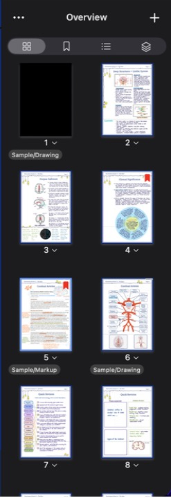
Overview: thumbnails with page tags and bookmark ribbons
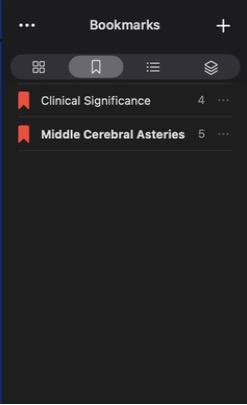
Bookmarks (named, with page number)
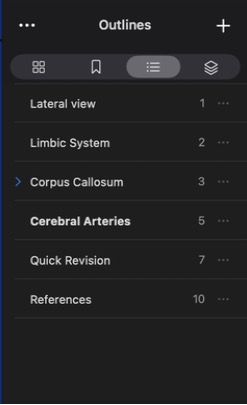
Outlines (table of contents, nestable)
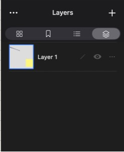
Layers
Layers: each has a thumbnail, name, lock 🔒, visibility 👁 and ••• menu. Sample uses "Frame / Notes / Have a guess / More answer" — hide the answer layer to quiz yourself. Free version is limited to 2 layers.
Outlines: entries jump to pages; the bold one is the current section; can be nested (chevron).
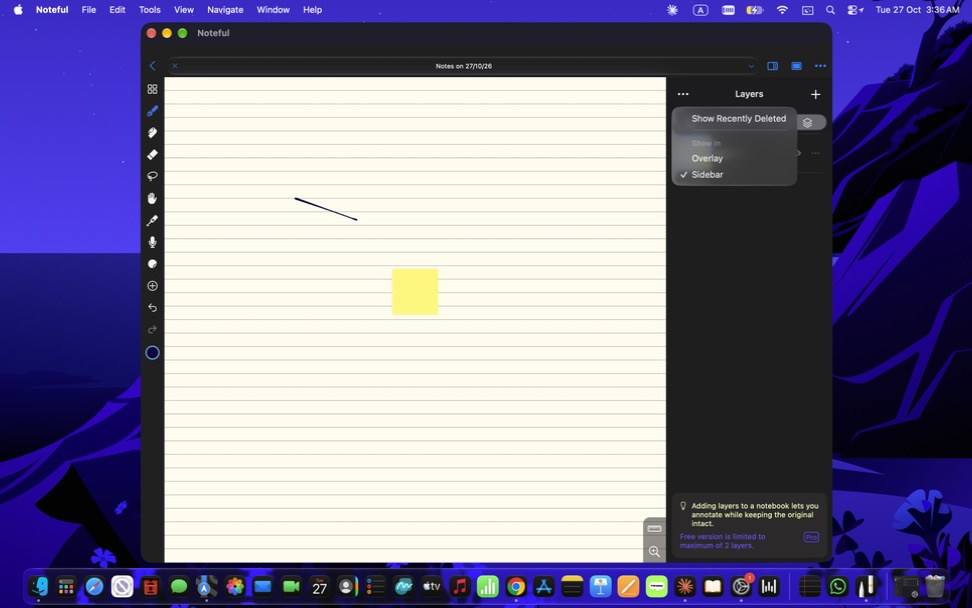
Sidebar ••• menu and the free-tier layer limit notice
13. View, ruler, zoom window
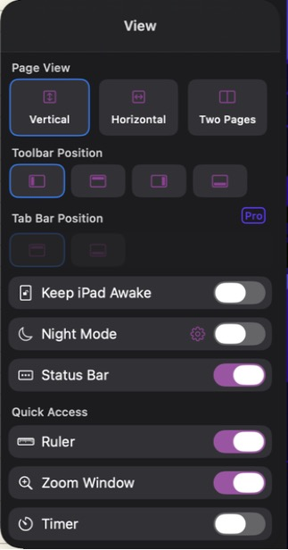
View panel
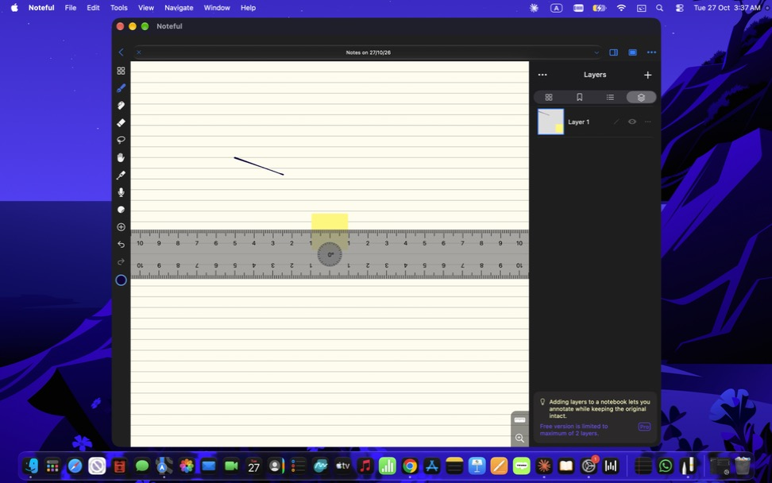
Ruler (cm both edges, rotation dial shows 0°)
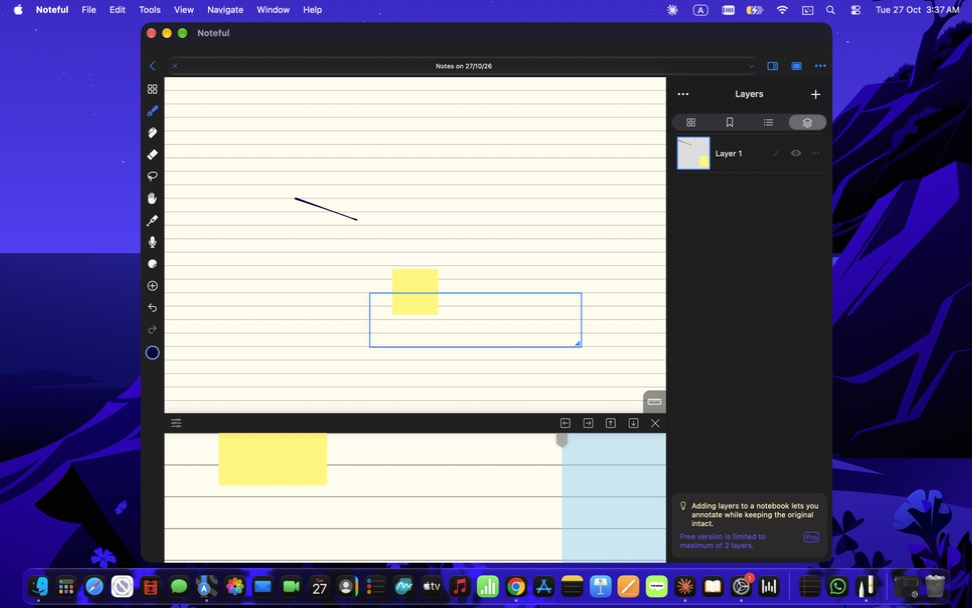
Zoom window
Page View: Vertical scroll, Horizontal (swipe), Two Pages side by side.
Toolbar Position: left, top, right, bottom. Tab Bar Position top/bottom (Pro).
Keep iPad Awake, Night Mode (dark paper; ⚙ for options), Status Bar.
Quick Access toggles: Ruler, Zoom Window, Timer.
Ruler: draggable/rotatable straight-edge; pen strokes near it snap straight.
Zoom window: magnified writing strip at the bottom (write big, it lands small). Blue box on the page shows the target area; controls ← → ↑ ↓ to advance and ✕; ⚙ for settings; auto-advance margin on the right.
Menu View: Zoom to 100%, Zoom In, Zoom Out, Zoom to Fit, Full Screen.
14. More menu & per-notebook settings
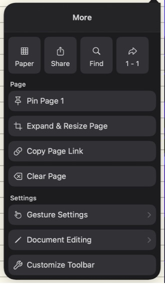
More (•••)
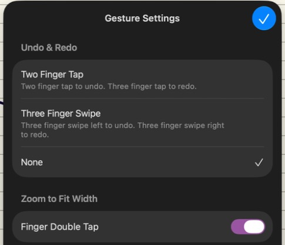
Gesture Settings
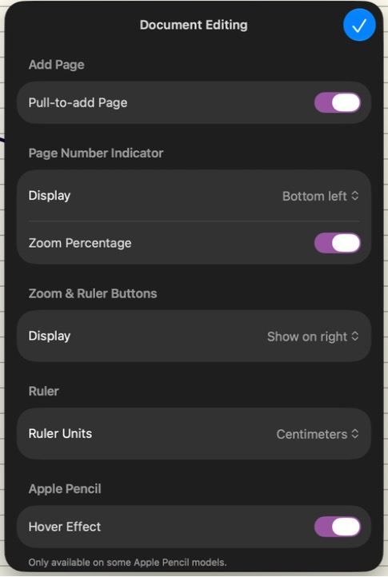
Document Editing
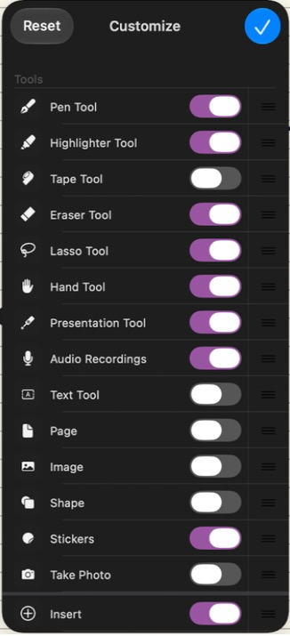
Customize Toolbar
Top buttons: Paper (change template of current page), Share (export PDF / notebook), Find (search inside notebook text + handwriting), 1 – 1 (go to page).
Page: Pin Page, Expand & Resize Page (add margin space around a PDF page), Copy Page Link, Clear Page.
Gesture Settings: Undo/Redo by two-finger tap (three-finger tap redo) or three-finger swipe, or none; Finger double-tap = zoom to fit width.
Document Editing: Pull-to-add Page, page number indicator position + zoom %, zoom & ruler buttons position, ruler units (cm/in), Apple Pencil hover effect.
Customize Toolbar: toggle and drag-reorder each tool (Pen, Highlighter, Tape, Eraser, Lasso, Hand, Presentation, Audio, Text, Page, Image, Shape, Stickers, Take Photo, Insert). Reset.
15. App settings
About / Settings sheet (N logo)ThemesCloud Sync
Upgrade to Pro · Rate on App Store · Send Feedback · Notebook Templates (manage saved templates).
Themes: appearance System / Light / Dark; toolbar Match appearance / Dark.
Cloud Sync: iCloud sync (Pro), last-sync time, Diagnostics.
Global Document Editing and Gesture Settings (same as per-notebook ones).
16. Menus & keyboard shortcuts
On iPad these work with a hardware keyboard (hold ⌘ to see them). Touch gestures: two-finger tap = undo, three-finger tap = redo, pinch = zoom, finger double-tap = fit width, Pencil double-tap = switch to eraser.
Menu
Items
File
New Notebook, New Window, Move Tab to New Window, Open Library, Close Notebook, Close All
Pen F, Highlighter G, Eraser E, Lasso A, Hand H, Text T, Pen Favorite 1–9 1–9
View
Zoom to 100%, Zoom In, Zoom Out, Zoom to Fit, Enter Full Screen
Navigate
Page Up/Down, Scroll to Top/Bottom, Go to page…, Back, Forward, Previous/Next/First/Last Tab
17. Premium features: keep vs skip
Pro is a one-time $6.99 unlock.
Full Pro list: Sync with iCloud, Unlimited Notebooks, More than 3 Colour Pickers, Premium Templates, Unlimited Layers, Bookmarks, Outlines, Auto-Backup, Premium Shape Objects, Image Cropping, Advanced Lasso Options, Advanced Eraser Options, Tab-bar position. Here's what's worth building:
Feature
Verdict
Why
Cloud sync
Keep
Essential — people lose notes without it. Make it free in yours.
Auto-backup
Keep
Cheap to build, saves users from disasters.
Unlimited notebooks
Keep
A limit here just annoys people; make it free.
Unlimited colours / colour favourites
Keep
3 colours is too few for study notes.
Bookmarks
Keep
Simple and used a lot in long notebooks.
Outlines (table of contents)
Keep
Great for textbooks/PDFs; can auto-import PDF outlines.
Unlimited layers
Keep
Powers the "hide the answer" study trick.
Erase whole stroke / highlight-only eraser
Keep
Stroke eraser is a basic expectation.
Lasso object filters
Keep
Selecting only ink on top of a PDF is very handy.
Image cropping
Keep
Basic image editing.
Templates: Dot, Cornell, 2-column
Keep
The most used study layouts.
Music / guitar TAB / storyboard / handwriting templates
Skip (for now)
Niche. Add a "import your own template" instead.
Extra cover designs (botanical, composition, patterns)
Skip
Cosmetic. A few solid colours + custom image cover is enough.
Premium shapes (hexagon, cloud, burst, star)
Skip
Rarely used; Auto Shape covers the common cases.
Tab-bar position
Skip
Trivial preference, not worth the complexity.
Eraser "auto-select previous tool"
Optional
Nice-to-have only.
18. How to make yours better
Fewer clicks for tool options: Noteful needs select-then-click-again to open a panel and the panels are dense. Use a long-press or a small floating "quick bar" with size + colour.
Real text editing in Quick Note: the textbox flow is clunky (text tool must be chosen first). Let users just start typing on a page.
Handwriting search everywhere: OCR all ink in the background so library search finds words inside notes, not just names.
Convert to text / math: extend "Convert to Text" to math (LaTeX) and to tidy diagrams.
Study mode: turn tape, "?" stickers and hidden layers into a real flashcard/quiz mode with spaced repetition.
Audio synced to ink: tap a word to replay what was said when you wrote it (Notability's best feature, missing here).
Cross-platform sync (not just iCloud) — e.g. your own backend so web/Android users can join.
Sharing & collaboration: share a notebook link, live co-editing.
AI helpers: summarise a page, make flashcards from notes, explain a highlighted PDF passage.
Better empty states and onboarding: the sample notebook is good — keep a guided sample.
Note: while testing, a quick note called "Notes on 27/10/26" was created in your Noteful library (it has a test line, a yellow square and two empty text boxes). You can delete it. Your sample notebooks were not changed.